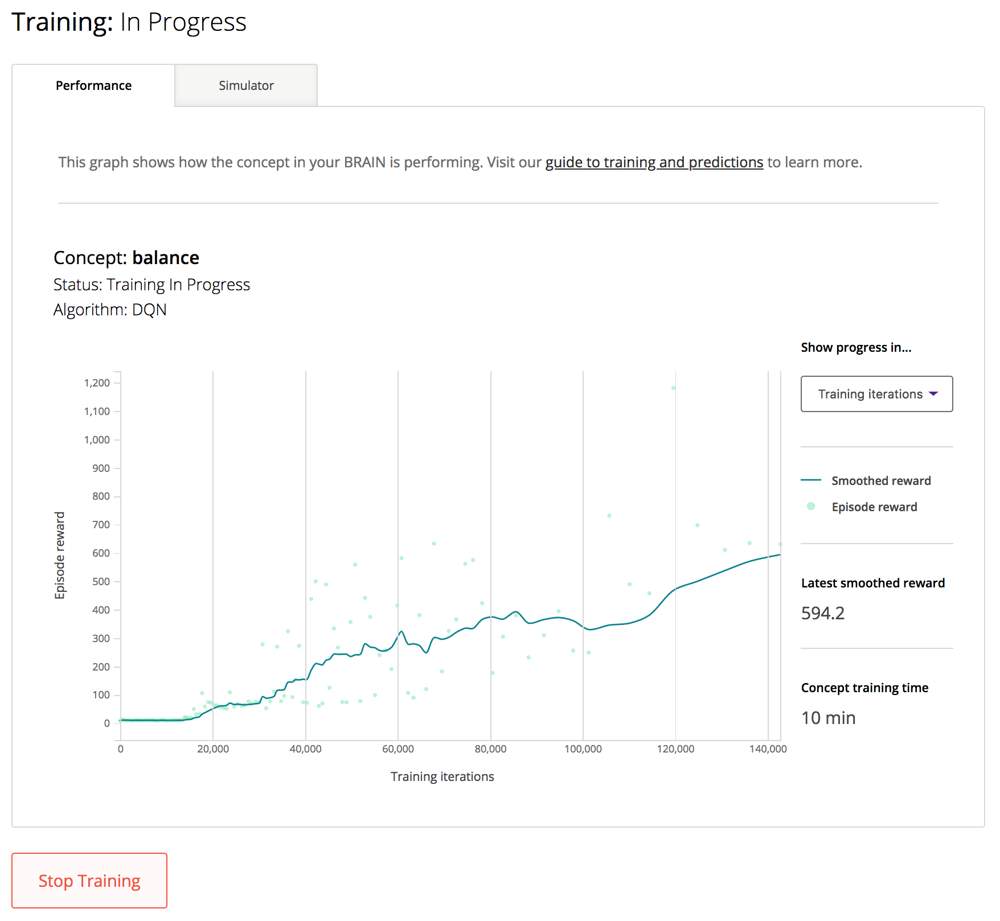
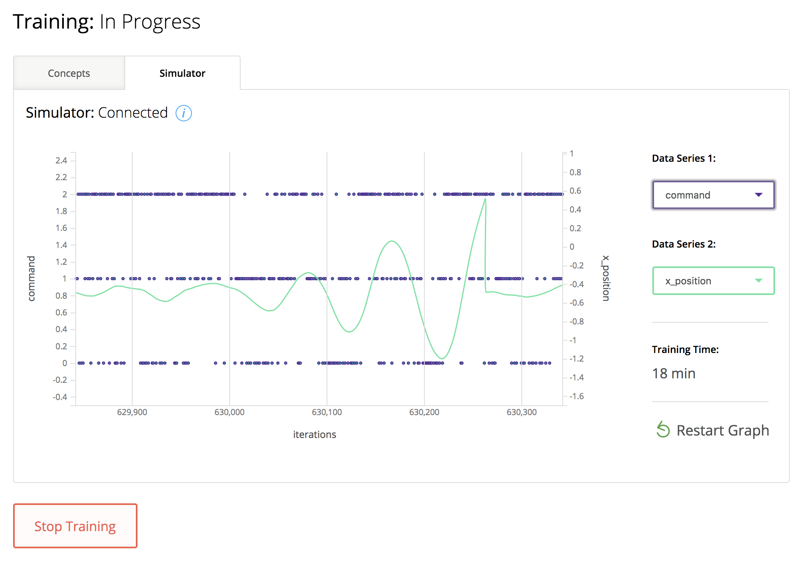
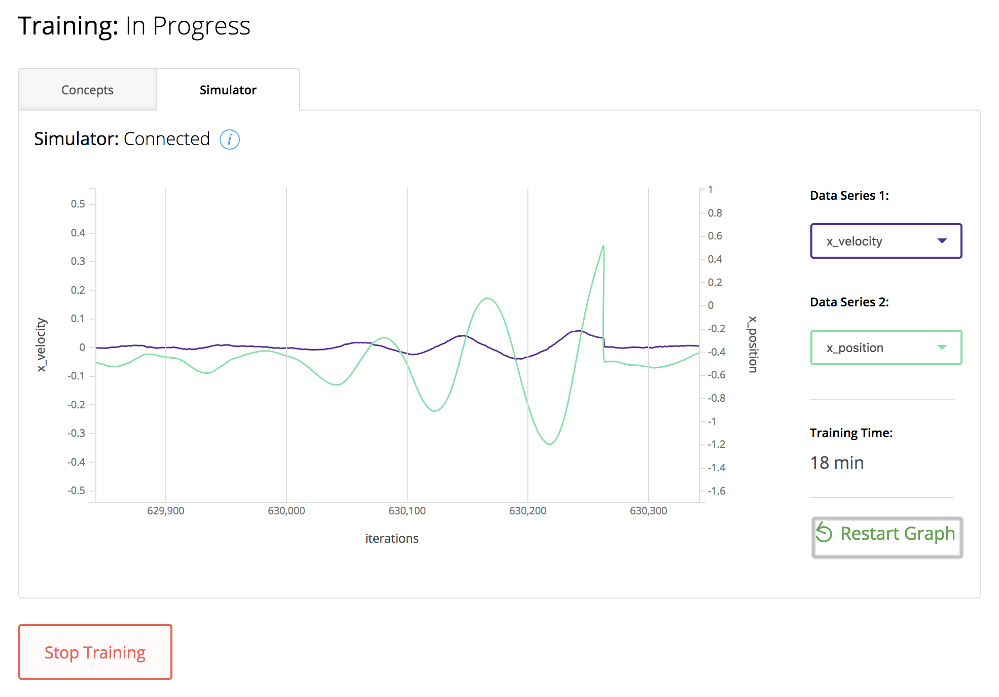
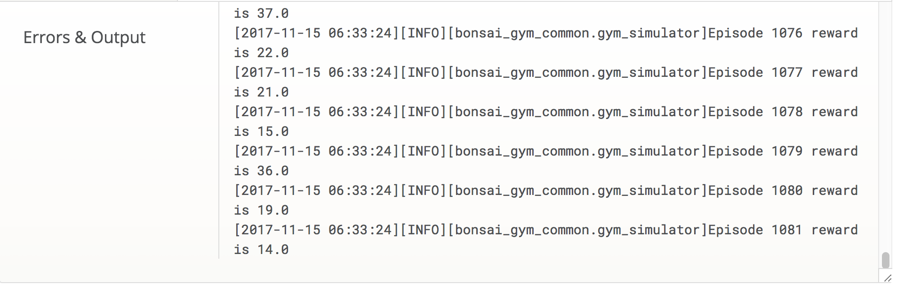

Introduction
This guide will familiarize you with the two training graphs displayed on every BRAIN’s Details Page on The Bonsai Platform. These graphs can be used to monitor training, troubleshoot your BRAIN, and decide when your BRAIN has been sufficiently trained and is ready for predictions.

In this guide we’ll be walking through the graphs for OpenAI Gym’s Cartpole environment to illustrate how to best use the information gathered in the Performance and Simulator graphs. If you need instruction on how to create a demo on the Platform you can follow the web guide. You may also choose to Run the Platform Locally. OpenAI Gym describes Cartpole as:
A pole is attached by an un-actuated joint to a cart, which moves along a frictionless track. The system is controlled by applying a force of +1 or -1 to the cart. The pendulum starts upright, and the goal is to prevent it from falling over. A reward of +1 is provided for every timestep that the pole remains upright. The episode ends when the pole is more than 15 degrees from vertical, or the cart moves more than 2.4 units from the center.
A summary of common terms you’ll see mentioned on these graphs and in this guide is shown below.
Summary table of terms
| Concept | One or more concepts are used to define what you are going to teach the BRAIN. For more details see Concept Reference. |
| Simulator | A simulator connects to the BRAIN and runs a simulation, which the AI Engine trains on. A simulation imitates a real-world situation in a virtual environment, which enables a user to rapidly test and predict scenarios. |
| Iteration | An iteration is one state → action → new-state transition in the environment. The loop starts when the simulator sends the AI Engine a state; next, the AI Engine replies with an action; then, the simulator uses this action to advance the environment (deployed or simulated) and compute a new state as well as a reward. |
| Episode | An episode is a series of iterations, starting in some initial state and ending when the environment hits a termination condition and the environment resets for the next episode. Episodes can vary in length, with termination conditions typically defined based on succeeding at the task, failing at the task, getting too far from success, or running out of time. |
| Reward | Reward is the objective of training. During training, the AI Engine learns to maximize the cumulative reward given by the simulation’s reward function over the course of an episode. |
For more information on writing reward functions and other terms in this guide please watch Writing Great Reward Functions.
Start Training

Once you’ve created your Cartpole demo you should see a “Start Training” button as shown in the image. Clicking that button starts the automatic process of hooking up a web hosted version of the OpenAI Gym environment up to the BRAIN you’ve created, and starts the AI Engine training on this simulation. It should take less than a minute for this connection (depending on how long the first episode takes to log) and you’ll start to see data appearing on the Performance tab graph!
Performance Graph

On the performance graph at the top there is a display of which concept is currently training, its status, and what algorithm it’s being trained on. Plotted are episode reward and average reward vs. training episodes. There is a drop down menu on the right so that you can choose to also view the graph as episode reward vs. training iterations The current episode reward and the training time per concept for this version of the BRAIN are shown to the right.
This graph shows your BRAIN’s performance during training. After every 20 training episodes, the system runs a test episode. A test episode is the same as running the simulation in prediction mode after training has stopped - it runs without exploration. The dots indicate individual rewards achieved by each of these test episodes. The smoothed reward is the average of the 10 previous such rewards. The x axis can be displayed as either the total number of training iterations before each test episode, which is the number of state transitions and rewards that the BRAIN has had to learn from, or the episode count (including training and test episodes).
Simulation Graph
The simulation graph illustrates the states, actions, and rewards for a given simulation and allows users to graph them against each other to see correlations. This information can be helpful when debugging simulations and reward functions. On the simulation graph you will notice there is a status for the connectivity between the BRAIN and the simulator, two data series for you to choose to display, and the total training time of this version of the BRAIN.
You may also pause the display of data being collected on the graph at any time. This can be useful when a simulation’s iterations happen very quickly. When you unpause the graph data will be shown in real-time.
Data Series

There are two separate drop down menus to display data series. Each data series will scale to its own axis on the simulation graph. For each of these values you can choose from any of the states, actions, or rewards you have defined in Inkling for the BRAIN being trained.
It can be useful to watch how your BRAIN is performing by graphing correlating values against one another and making sure the data makes sense. In the case of Cartpole we can see that x_position correlates with command and when we see that a command of 2 we see that the sinusoidal curve is closer to 1 (the right edge) and when the command is 0 the curve is closer to -1 (the left edge). The AI is giving commands for the cart to move towards where the pole is falling in order to maintain balance.

You can see in the second graph the relation between x_position and x_velocity. The cart is going to be balancing the pole and if a large velocity is needed, the position of the cart is probably farther away from the center position (0). Smaller velocities are generally correlating with the cart staying near the center position. Large velocities are typically seen right before the episode ends, as the cart gives a last try at balancing before the pole drops.
Troubleshooting Your BRAIN

When your graph isn’t looking quite right, or if your reward isn’t building in the way you’d expect, the Simulator Graph can be a great way to troubleshoot what might be going on in your BRAIN. Graphing your reward against an action schema for example can tell you what is happening every iteration of your simulation.
Another way to troubleshoot your BRAIN is to check out the logs down below the code editor window. This can be found below the graphs and is typically used for text output of what’s going on in the simulation. For example, with Cartpole, every single episode’s reward is output to the logs and shown in the code panel here. Since the graph on the Performance tab only displays an average. For simulations with very long episode time lengths this can be a good way to make sure things are working correctly in the beginning, before the first test episode is shown on the graph.
When to Stop Training

So you’ve looked around at the different graphs and what the data has to offer, and now you might be wondering “Ok, so when do I hit the stop training button?” The answer to this question varies widely depending on the simulation. You have to know what a sufficient reward looks like for your problem you’re solving.
In the case of Cartpole what we’re looking for is the length of time between test episodes, because this is indicative of how long the AI is able to balance the pole before crashing and terminating that episode. The AI gets pretty good at playing the game after just a few minutes, where it can often reach around 1000 reward. If keeping the pole balanced for longer than that is necessary, then you would continue training and refining the model until you are satisfied with the BRAIN’s performance at the given task.
The time it will take to reach this level of training can vary due to many factors. Just because a BRAIN took 5 minutes to train Cartpole one time doesn’t mean it can’t take 15 minutes to reach the same reward another time. There is still a lot of variance in training due to exploration and bandwidth so the shape of the graph is the most reliable method of determining when to stop training.
Automatic Termination
Your BRAIN will not train forever. If you don’t choose to stop training yourself, the AI Engine will determine a point in which it has considered to be done training, and then wait a significant time period after that in case the user continues to want the training data. For Cartpole this will be 4.5 million iterations. This will show a BRAIN status of “Complete” because that version of the BRAIN can no longer be trained.